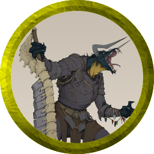
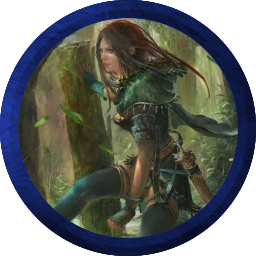

<div> 묵이군 </div> <div>  </p> <table border="0" style="width:100%"> <tr width=50%> <th>이름</th> <td>라캉</td> <th>종족</th> <td>블랙 드래곤본</td> </tr> <tr width=50%> <th>직업</th> <td>파이터 : 배틀마스터</td> <th>성향</th> <td>혼돈 선</td> </tr> <tr width=50%> <th>인격 특성</th> <td>나는 누구보다 자유롭고 용감한 바다의 드래곤본이다!</td> <th>이상</th> <td>언젠가 자신만의 배를 가지고 든든한 선원들과 함께 바다로 떠나고자 합니다</td> </tr> <tr width=50%> <th>유대</th> <td>바다는 언제나 두려운 대상이지만 동시에 정복하고 싶은 공간입니다. 가족처럼 항해했던 동료 선원들과는 애증의 관계입니다</td> <th>단점</th> <td>술을 마시기 시작하면 멈출 수 없습니다. 드래곤, 바다, 용기라는 단어에 민감합니다</td> </tr> </table> <b>배경 설정</b> <br>  라캉은 파도치는 엘자 호의 선상에서 태어나 돌고래, 갈매기와 함께 자랐습니다. 드래곤본의 육체는 7살이 되기 전부터 그가 뱃사람들과 팔씨름을 해도 될 정도로 강인해졌고, 자연히 선장의 눈에 들어 싸움법과 항해의 기술 등을 배우게 되었습니다.<br>  라캉이 10살이 되었을 때 그의 배는 해적단의 습격을 받았습니다. 가까스로 워터딥의 항구에 도착한 결과, 선장의 목숨을 건 희생으로 선원의 피해는 없었지만 배가 크게 파손되었습니다. 그들을 공격한 해적단의 배는 폭풍우 속에서 모습을 감추었으니 굳이 선장의 복수를 찾을 필요는 없을 겁니다.<br>  라캉과 선원들은 함께 선장을 애도했으나 이후 갈라지게 됩니다. 다시 바다로 나가자는 라캉과 달리 선원들은 거친 뱃일을 그만두고 육지에서의 삶으로 돌아가기를 선택했기 때문입니다. 라캉은 꾸준히 그들을 설득하려 했지만 동조하는 이는 없었습니다.<br>  선원들에게 실망한 라캉은 혼자서라도 바다로 가고자 합니다. 모험가로 활동해 많은 돈을 벌고, 이전 선원들과 달리 자신을 배신하지 않을 믿음직한 선원을 구해서요. </div> <div> <br> <img src="마라.jpg" alt="Image Not Found" width="300" height="300" align="center"> </p> <table border="0" style="width:100%"> <tr> <th>이름</th> <td>마라</td> <th>종족</th> <td>인간</td> </tr> <tr> <th>직업</th> <td>헬름의 성기사</td> <th>성향</th> <td>질서 선</td> </tr> <tr> <th>인격 특성</th> <td>귀족 가문 출신으로서 사람을 평가할 때 가문의 명성을 기준으로 삼으며, 힘없고 우매한 평민들을 보호해야한다는 의무감을 지녔다</td> <th>이상</th> <td>약자들을 괴롭히는 악을 제거하고, 과거 영지를 멸망시킨 오크들을 찾아 복수하길 꿈꾼다</td> </tr> <tr> <th>유대</th> <td>사원에서 생활하며 사제와 성기사들에게 감사의 마음과 믿음을 가지고 있다.</td> <th>단점</th> <td>과거의 트라우마로 무고하게 희생된 약자들과 오크를 보면 강하게 충동적인 분노를 느낀다</td> </tr> </table> <b>배경 설정</b> <br>  시골 변방의 작은 영지를 다스리던 스톤아이언 가문의 장남으로 태어난 마라. 유일한 후계자로서 역사학, 엘프어 같은 지식과 무술을 배우며 성장한다. 그리고 그의 나이 13살 때 영지를 침공한 오크들에게 가족과 영지민, 그리고 전 재산을 잃게된다. <br>  가까스로 목숨만을 건진 마라는 우연히 마주쳐 피난민들을 치료하는던 성기사의 제안을 받고, 보호의신 헬름 교단에 입단한다. 그는 오크에 대한 분노를 간직하고 무술 수련에 몰두하였으며, 특히 자신의 영지를 멸망시킨 오크들을 찾아 복수하고자 오크어와 위협 기술을 배운다. <br>  기본적으로 귀족적이고 약자를 위하는 태도를 지니고 있지만, 과거의 트라우마로 악과 오크를 마주치면 분노를 참지 못한다. 20세에 정식으로 성기사가 된 마라는 갑옷에 헬름 교단의 상징인 눈이 그려진 건틀렛과 가문의 문장을 새겨넣은뒤, 인류 수호와 오크에 대한 복수를 꿈꾸며 모험을 떠나게 된다. </div> <div> <br> <img src="오리온.jpg" alt="Image Not Found" width="300" height="300" align="center"> </p> <table border="0" style="width:100%"> <tr> <th>이름</th> <td>오리온</td> <th>종족</th> <td>바위 노움</td> </tr> <tr> <th>직업</th> <td>위저드</td> <th>성향</th> <td>혼돈 선</td> </tr> <tr> <th>인격 특성</th> <td>아이들을 좋아합니다. 하지만 어른에겐 오락가락하는 편이지요 그래도 책임감있는 부모들까지 싫어하진 않습니다</td> <th>이상</th> <td>마법으로부터 동떨어진 이종족들에게도 마법의 재능과 흥미를 일깨워주는 것</td> </tr> <tr> <th>유대</th> <td>아이들을 좋아합니다</td> <th>단점</th> <td>누군가를 죽인다는 생각으로 마법을 배워본적 없습니다. 마술사에 가까울지도 모르겠네요</td> </tr> </table> <b>배경 설정</b> <br>  오리온은 아주 젊을때부터 학자였습니다. 마법에 대한 연구를 하지만 누군가를 해치는 마법은 절대 연구하지 않았지요. 왜냐하면 오리온은 마법사 학교의 교사이며 아이들에게 가르칠 마법만 연구해왔기 때문입니다. 최소한의 호신용을 제외하면 공격마법은 가르쳐주지 않았지요. <br>  그의 학교에는 드워프는 물론 엘프 노움 인간까지 많은 종족의 학생들이 마법을 배웁니다. 그는 아이들이 우리의 미래라고 생각하고 지켜야 한다고 생각하지만 반대로 어른들에게는 그다지 친절하지 않습니다. 어른에게 상처받은 아이들을 자주 봐와서 일까요? 혼돈 선 성향을 가집니다. <br>  조용히 소소한 마법만 가르치며 살고있던 오리온에게도 큰 변화가 찾아옵니다. 그가 중년에 접어들 적에 한 드워프 소년과 그의 학부형들이 입학을 위해 찾아옵니다. 하지만 그들은 다종족이 섞여있는 학교가 언짢아 보이는군요. 드워프 소년은 누구보다 재능있고 열정적인듯 했습니다 드워프 치고는 남다른 편이지요. 하지만 그는 대장간과 술집만 그득한 드워프들의 고향으로 돌아갈수밖에 없군요. 돌아서는 드워프 소년의 눈빛과 재능을 보고 오리온은 더 많은 학생을 찾아 모험을 떠나기로 합니다. 더이상 좁아터진 학교안에 갇혀서 책만 들여다 보기엔 질려버린거지요. </div> <div> <br> <img src="유바바.jpg" alt="Image Not Found" width="300" height="300" align="center"> </p> <table border="0" style="width:100%"> <tr> <th>이름</th> <td>유바바</td> <th>종족</th> <td>티플링</td> </tr> <tr> <th>직업</th> <td>워락</td> <th>성향</th> <td>혼돈 선</td> </tr> <tr> <th>인격 특성</th> <td>본성이 나쁜건 아니지만, 오랜 시간 혼자 지내 폐쇄적이고 괴팍합니다</td> <th>이상</th> <td>악마와 계약을 통해 하플링을 다시 살려 남은 삶을 같이 보내는 것</td> </tr> <tr> <th>유대</th> <td>어렸을적 차별때문에 거의 모든 사람을 싫어하지만, 하플링같이 작은 종족에겐 좀 더 호의적입니다</td> <th>단점</th> <td>겉은 젊지만 속은 늙은 할머니 입니다</td> </tr> </table> <b>배경 설정</b> <br>  북쪽 작은 마을 농부의 집에서 한 아이가 태어납니다. 아이를 받은 산파는 놀라서 쓰러집니다. 아이의 피부는 푸른색을 띄며 머리에는 작은 뿔이 달려 있었습니다. 그 때문인지 유바바가 기억하는 유년시절은 곰팡이핀 지하실이 전부입니다. 답답함에 유바바는 집을 떠나 세상으로 나옵니다. 하지만 티플링이 받는 크고작은 차별이 계속 되자 왜 자신의 부모가 지하실에 자신을 가둬놨는지 점차 이해하게 됩니다. <br>  유바바는 숲에서 어느 늙은 하플링 사냥꾼을 도와주게 됩니다. 회색 머리칼을 가진 이 하플링은 자신의 부족으로 돌아가지 못해 숲속에서 살고 있다고합니다. 그는 젊었을 적 음유시인으로 지냈다고 합니다. 유바바는 그와 함께 숲 속의 작은 오두막에서 지냅니다. 주변 약초를 캐며 연구하고 작은 동물을 사냥하며 가끔 하플링이 마을에 내려가 사온 책을 읽으며 지냅니다. <br>  작은 오두막에서 노쇠한 하플링과 20년 정도같이 지내며 그의 임종까지 지킵니다. 혼자서 생활하는 유바바는 점점 더 폐쇄적으로 변합니다. 대부분의 시간을 오두막에서 보내며 특히 죽음과 악마에 대한 연구에 몰두합니다. 성격은 괴팍해지고 고집스러워집니다. 자신의 수명이 얼마 남지 않음을 느낀 유바바는 악마와 계약합니다. </div> <div> <br>  </p> <table border="0" style="width:100%"> <tr> <th>이름</th> <td>칼리엔 아마스타시아</td> <th>종족</th> <td>우드 엘프</td> </tr> <tr> <th>직업</th> <td>몽크</td> <th>성향</th> <td>혼돈 선</td> </tr> <tr> <th>인격 특성</th> <td>한평생 숲에서만 살아왔기 때문에 인구가 많은 마을이나 도시는 거북합니다. 고향에선 모두가 친구이자 형제였는데, 여긴 아닌 것 같습니다. 한편으로는 마을 바깥을 오래 바라보았기 때문인지 미지의 세계에 대한 호기심과 아주 약간의 자유에 대한 갈망이 있습니다</td> <th>이상</th> <td>'가능한 한 많은 것을 경험하라. 그리고 반드시 돌아오라'는 촌장의 명령이 있습니다. 사랑하는 마을의 발전을 위해서, 그 임무를 마다해선 안되겠지요</td> </tr> <tr> <th>유대</th> <td>엘프(특히 우드 엘프)는 나의 형제이며 숲은 나의 집입니다. 그들은 나에게 안식을 줍니다</td> <th>단점</th> <td>'우리'라는 울타리 안에 들지 못한 바깥 존재들은 어찌 되든 상관 없습니다. 나는 내 사람들을 지키는 걸로 충분합니다</td> </tr> </table> <b>배경 설정</b> <br>  어느 깊은 숲 속에 자리잡은 우드 엘프 마을에서 태어나고 자란 엘라. 그녀의 가문은 대대로 마을을 외부 위협으로부터 지키는 역할을 맡고 있으며, 이에 엘라 또한 어렸을 때부터 경비를 위해 각종 훈련을 받았다. 민첩함과 조용한 움직임이 특기였던 엘라는 성인이 된 직후 척후병으로서 약 100년 간 활동하게 된다. <br>  그 사이 마을에는 변화가 조금씩 일어났다. 마을 밖 모든 것에 배타적이었던 전 촌장과 달리 새로이 부임한 촌장은 숲의 주민은 물론 숲 바깥 종족과의 교류를 강하게 주장했다. 이대로 가면 이 마을의 시야는 점점 더 좁아져 결국 설 자리가 없어지리라는 것이 그의 말이었다. 보수적인 늙은이들과 달리 젊은이들은 촌장의 말을 적극적으로 지지했고, 교류의 물꼬를 트기 위한 첫 발걸음으로써 어느 정도 실력이 있는 엘프들을 바깥으로 파견했다. <br>  아명 엘라, 현 칼리엔 아마스타시아도 그 중 하나였다. </div>